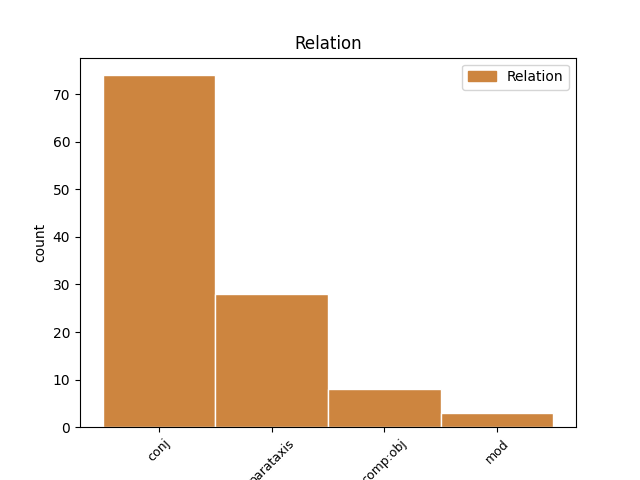
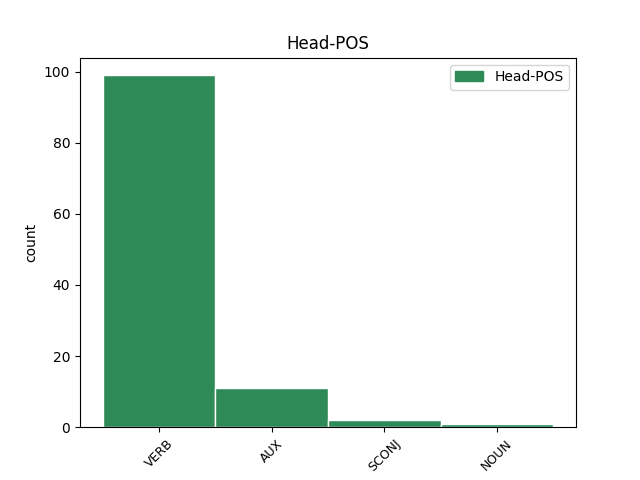
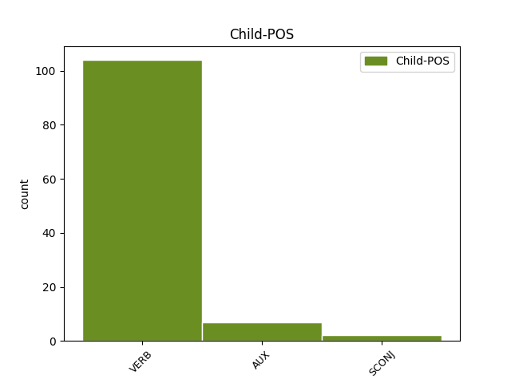

Distribution of features within this leaf



Agreement Rules sorted by frequency.
- When the dependent token is the conjunct(conj) of the head token, and the head token is VERB and the dependent token is VERB.
1 Ён _ _ _ _ 0 _ _ _
2 прыставаў _ _ _ _ 0 _ _ _
3 да _ _ _ _ 0 _ _ _
4 свайго _ _ _ _ 0 _ _ _
5 даўганогага _ _ _ _ 0 _ _ _
6 дзядзькі _ _ _ _ 0 _ _ _
7 Жырафа _ _ _ _ 0 _ _ _
8 і _ _ _ _ 0 _ _ _
9 пытаўся пытацца VERB VBC Aspect=Imp|Gender=Masc|Mood=Ind|Number=Sing|Tense=Past|VerbForm=Fin|Voice=Mid 0 _ _ _
10 , _ _ _ _ 0 _ _ _
11 чаму _ _ _ _ 0 _ _ _
12 ў _ _ _ _ 0 _ _ _
13 яго _ _ _ _ 0 _ _ _
14 на _ _ _ _ 0 _ _ _
15 скуры _ _ _ _ 0 _ _ _
16 плямы _ _ _ _ 0 _ _ _
17 , _ _ _ _ 0 _ _ _
18 і _ _ _ _ 0 _ _ _
19 высачэзны _ _ _ _ 0 _ _ _
20 дзядзька _ _ _ _ 0 _ _ _
21 Жыраф _ _ _ _ 0 _ _ _
22 даваў даваць VERB VBC Aspect=Imp|Gender=Masc|Mood=Ind|Number=Sing|Tense=Past|VerbForm=Fin|Voice=Act 9 conj _ _
23 яму _ _ _ _ 0 _ _ _
24 за _ _ _ _ 0 _ _ _
25 гэта _ _ _ _ 0 _ _ _
26 грымака _ _ _ _ 0 _ _ _
27 сваім _ _ _ _ 0 _ _ _
28 цвёрдым _ _ _ _ 0 _ _ _
29 , _ _ _ _ 0 _ _ _
30 як _ _ _ _ 0 _ _ _
31 камень _ _ _ _ 0 _ _ _
32 , _ _ _ _ 0 _ _ _
33 капытом _ _ _ _ 0 _ _ _
34 . _ _ _ _ 0 _ _ _
1 З _ _ _ _ 0 _ _ _
2 пашчы _ _ _ _ 0 _ _ _
3 пачвары _ _ _ _ 0 _ _ _
4 вылятаў вылятаць VERB NN Aspect=Imp|Mood=Ind|Number=Sing|Person=3|Tense=Past|VerbForm=Fin|Voice=Act 0 _ _ _
5 агонь _ _ _ _ 0 _ _ _
6 , _ _ _ _ 0 _ _ _
7 вочы _ _ _ _ 0 _ _ _
8 палалі палаць VERB VBC Aspect=Perf|Mood=Ind|Number=Plur|Tense=Past|VerbForm=Fin|Voice=Act 4 parataxis _ _
9 шаленствам _ _ _ _ 0 _ _ _
10 . _ _ _ _ 0 _ _ _
1 Ён _ _ _ _ 0 _ _ _
2 прыставаў _ _ _ _ 0 _ _ _
3 да _ _ _ _ 0 _ _ _
4 Страўсіхі _ _ _ _ 0 _ _ _
5 , _ _ _ _ 0 _ _ _
6 сваёй _ _ _ _ 0 _ _ _
7 даўгавязай _ _ _ _ 0 _ _ _
8 цёткі _ _ _ _ 0 _ _ _
9 , _ _ _ _ 0 _ _ _
10 і _ _ _ _ 0 _ _ _
11 пытаўся пытацца VERB VBC Aspect=Imp|Gender=Masc|Mood=Ind|Number=Sing|Tense=Past|VerbForm=Fin|Voice=Mid 0 _ _ _
12 , _ _ _ _ 0 _ _ _
13 чаму _ _ _ _ 0 _ _ _
14 ў _ _ _ _ 0 _ _ _
15 яе _ _ _ _ 0 _ _ _
16 на _ _ _ _ 0 _ _ _
17 хвасце _ _ _ _ 0 _ _ _
18 пёры _ _ _ _ 0 _ _ _
19 растуць расці VERB VBC Aspect=Imp|Mood=Ind|Number=Plur|Person=3|Tense=Pres|VerbForm=Fin|Voice=Act 11 comp:obj _ _
20 так _ _ _ _ 0 _ _ _
21 , _ _ _ _ 0 _ _ _
22 а _ _ _ _ 0 _ _ _
23 не _ _ _ _ 0 _ _ _
24 гэтак _ _ _ _ 0 _ _ _
25 , _ _ _ _ 0 _ _ _
26 і _ _ _ _ 0 _ _ _
27 даўгавязая _ _ _ _ 0 _ _ _
28 цётка _ _ _ _ 0 _ _ _
29 Страўсіха _ _ _ _ 0 _ _ _
30 давала _ _ _ _ 0 _ _ _
31 яму _ _ _ _ 0 _ _ _
32 за _ _ _ _ 0 _ _ _
33 гэта _ _ _ _ 0 _ _ _
34 грымака _ _ _ _ 0 _ _ _
35 сваёй _ _ _ _ 0 _ _ _
36 цвёрдай _ _ _ _ 0 _ _ _
37 , _ _ _ _ 0 _ _ _
38 як _ _ _ _ 0 _ _ _
39 камень _ _ _ _ 0 _ _ _
40 , _ _ _ _ 0 _ _ _
41 нагой _ _ _ _ 0 _ _ _
42 . _ _ _ _ 0 _ _ _
1 Ён _ _ _ _ 0 _ _ _
2 плыў _ _ _ _ 0 _ _ _
3 па _ _ _ _ 0 _ _ _
4 Мускуснай _ _ _ _ 0 _ _ _
5 затоцы _ _ _ _ 0 _ _ _
6 , _ _ _ _ 0 _ _ _
7 якая _ _ _ _ 0 _ _ _
8 вяла весці VERB VBC Aspect=Imp|Gender=Fem|Mood=Ind|Number=Sing|Tense=Past|VerbForm=Fin|Voice=Act 0 _ _ _
9 яго _ _ _ _ 0 _ _ _
10 да _ _ _ _ 0 _ _ _
11 галоўнага _ _ _ _ 0 _ _ _
12 возера _ _ _ _ 0 _ _ _
13 і _ _ _ _ 0 _ _ _
14 галоўнай _ _ _ _ 0 _ _ _
15 з _ _ _ _ 0 _ _ _
16 яго _ _ _ _ 0 _ _ _
17 хацін _ _ _ _ 0 _ _ _
18 і _ _ _ _ 0 _ _ _
19 была быць AUX VBC Aspect=Imp|Gender=Fem|Mood=Ind|Number=Sing|Tense=Past|VerbForm=Fin|Voice=Act 8 conj _ _
20 адным _ _ _ _ 0 _ _ _
21 з _ _ _ _ 0 _ _ _
22 асноўных _ _ _ _ 0 _ _ _
23 участкаў _ _ _ _ 0 _ _ _
24 яго _ _ _ _ 0 _ _ _
25 палявання _ _ _ _ 0 _ _ _
26 . _ _ _ _ 0 _ _ _
1 Гэты _ _ _ _ 0 _ _ _
2 нос _ _ _ _ 0 _ _ _
3 матляўся _ _ _ _ 0 _ _ _
4 ва _ _ _ _ 0 _ _ _
5 ўсе _ _ _ _ 0 _ _ _
6 бакі _ _ _ _ 0 _ _ _
7 , _ _ _ _ 0 _ _ _
8 але _ _ _ _ 0 _ _ _
9 ўсё _ _ _ _ 0 _ _ _
10 ж _ _ _ _ 0 _ _ _
11 быў быць AUX VBC Aspect=Perf|Gender=Masc|Mood=Ind|Number=Sing|Tense=Past|VerbForm=Fin|Voice=Act 0 _ _ _
12 нікуды _ _ _ _ 0 _ _ _
13 не _ _ _ _ 0 _ _ _
14 варты _ _ _ _ 0 _ _ _
15 : _ _ _ _ 0 _ _ _
16 хіба _ _ _ _ 0 _ _ _
17 можна можна VERB VBNH Mood=Ind|Tense=Pres 11 parataxis _ _
18 такім _ _ _ _ 0 _ _ _
19 носам _ _ _ _ 0 _ _ _
20 падняць _ _ _ _ 0 _ _ _
21 што-небудзь _ _ _ _ 0 _ _ _
22 з _ _ _ _ 0 _ _ _
23 зямлі _ _ _ _ 0 _ _ _
24 ? _ _ _ _ 0 _ _ _
1 Але _ _ _ _ 0 _ _ _
2 вось _ _ _ _ 0 _ _ _
3 у _ _ _ _ 0 _ _ _
4 той _ _ _ _ 0 _ _ _
5 самы _ _ _ _ 0 _ _ _
6 час _ _ _ _ 0 _ _ _
7 , _ _ _ _ 0 _ _ _
8 даўным-даўно _ _ _ _ 0 _ _ _
9 , _ _ _ _ 0 _ _ _
10 жыў _ _ _ _ 0 _ _ _
11 адзін _ _ _ _ 0 _ _ _
12 такі _ _ _ _ 0 _ _ _
13 Слон _ _ _ _ 0 _ _ _
14 , _ _ _ _ 0 _ _ _
15 або _ _ _ _ 0 _ _ _
16 , _ _ _ _ 0 _ _ _
17 лепш _ _ _ _ 0 _ _ _
18 сказаць _ _ _ _ 0 _ _ _
19 , _ _ _ _ 0 _ _ _
20 Слонік _ _ _ _ 0 _ _ _
21 , _ _ _ _ 0 _ _ _
22 які _ _ _ _ 0 _ _ _
23 быў быць AUX _ Aspect=Imp|Gender=Masc|Mood=Ind|Number=Sing|Tense=Past|VerbForm=Fin|Voice=Act 0 _ _ _
24 страшэнна _ _ _ _ 0 _ _ _
25 дапытлівы _ _ _ _ 0 _ _ _
26 , _ _ _ _ 0 _ _ _
27 і _ _ _ _ 0 _ _ _
28 каго _ _ _ _ 0 _ _ _
29 , _ _ _ _ 0 _ _ _
30 бывала _ _ _ _ 0 _ _ _
31 , _ _ _ _ 0 _ _ _
32 ні _ _ _ _ 0 _ _ _
33 ўбачыць _ _ _ _ 0 _ _ _
34 , _ _ _ _ 0 _ _ _
35 да _ _ _ _ 0 _ _ _
36 ўсіх _ _ _ _ 0 _ _ _
37 прыстае прыставаць VERB _ Aspect=Imp|Mood=Ind|Number=Sing|Person=3|Tense=Pres|VerbForm=Fin|Voice=Act 23 conj _ _
38 з _ _ _ _ 0 _ _ _
39 роспытамі _ _ _ _ 0 _ _ _
40 . _ _ _ _ 0 _ _ _
1 Сёння _ _ _ _ 0 _ _ _
2 мне _ _ _ _ 0 _ _ _
3 будзе быць AUX _ Aspect=Imp|Mood=Ind|Number=Sing|Person=3|Tense=Pres|VerbForm=Fin|Voice=Act 0 _ _ _
4 дастаткова _ _ _ _ 0 _ _ _
5 прызнання _ _ _ _ 0 _ _ _
6 з _ _ _ _ 0 _ _ _
7 боку _ _ _ _ 0 _ _ _
8 аўдыторыі _ _ _ _ 0 _ _ _
9 , _ _ _ _ 0 _ _ _
10 буду быць AUX _ Aspect=Imp|Mood=Ind|Number=Sing|Person=1|Tense=Pres|VerbForm=Fin|Voice=Act 3 conj _ _
11 спяваць _ _ _ _ 0 _ _ _
12 кампазіцыю _ _ _ _ 0 _ _ _
13 з _ _ _ _ 0 _ _ _
14 рэпертуару _ _ _ _ 0 _ _ _
15 Beyonce _ _ _ _ 0 _ _ _
16 . _ _ _ _ 0 _ _ _
1 У _ _ _ _ 0 _ _ _
2 2009 _ _ _ _ 0 _ _ _
3 годзе _ _ _ _ 0 _ _ _
4 прырост _ _ _ _ 0 _ _ _
5 колькасцi _ _ _ _ 0 _ _ _
6 ўрачоў _ _ _ _ 0 _ _ _
7 па _ _ _ _ 0 _ _ _
8 сiстэме _ _ _ _ 0 _ _ _
9 аховы _ _ _ _ 0 _ _ _
10 здароўя _ _ _ _ 0 _ _ _
11 склаў складаць NOUN NN Aspect=Perf|Gender=Masc|Mood=Ind|Number=Sing|Tense=Past|VerbForm=Fin|Voice=Act 0 _ _ _
12 738 _ _ _ _ 0 _ _ _
13 чалавек _ _ _ _ 0 _ _ _
14 , _ _ _ _ 0 _ _ _
15 аднак _ _ _ _ 0 _ _ _
16 гэта _ _ _ _ 0 _ _ _
17 не _ _ _ _ 0 _ _ _
18 знiзiла знiзiць VERB VBC Aspect=Perf|Gender=Neut|Mood=Ind|Number=Sing|Tense=Past|VerbForm=Fin|Voice=Act 11 mod _ _
19 нагрузку _ _ _ _ 0 _ _ _
20 на _ _ _ _ 0 _ _ _
21 працуючых _ _ _ _ 0 _ _ _
22 урачоў _ _ _ _ 0 _ _ _
23 , _ _ _ _ 0 _ _ _
24 наадварот _ _ _ _ 0 _ _ _
25 , _ _ _ _ 0 _ _ _
26 каэфiцыент _ _ _ _ 0 _ _ _
27 сумяшчальнiцтва _ _ _ _ 0 _ _ _
28 вырас _ _ _ _ 0 _ _ _
29 і _ _ _ _ 0 _ _ _
30 складае _ _ _ _ 0 _ _ _
31 цяпер _ _ _ _ 0 _ _ _
32 1,41 _ _ _ _ 0 _ _ _
33 стаўкi _ _ _ _ 0 _ _ _
34 ( _ _ _ _ 0 _ _ _
35 у _ _ _ _ 0 _ _ _
36 2008 _ _ _ _ 0 _ _ _
37 годзе _ _ _ _ 0 _ _ _
38 — _ _ _ _ 0 _ _ _
39 1,39 _ _ _ _ 0 _ _ _
40 ) _ _ _ _ 0 _ _ _
41 . _ _ _ _ 0 _ _ _
Disagree Examples:
1 Аднак _ _ _ _ 0 _ _ _
2 , _ _ _ _ 0 _ _ _
3 жыхарка _ _ _ _ 0 _ _ _
4 Гродна _ _ _ _ 0 _ _ _
5 прадала прадаць VERB VBC Aspect=Perf|Gender=Fem|Mood=Ind|Number=Sing|Tense=Past|VerbForm=Fin|Voice=Act 0 _ _ _
6 кватэру _ _ _ _ 0 _ _ _
7 , _ _ _ _ 0 _ _ _
8 каб каб SCONJ IN Mood=Cnd 5 mod _ _
9 не _ _ _ _ 0 _ _ _
10 пазбавіцца _ _ _ _ 0 _ _ _
11 ўкладзеных _ _ _ _ 0 _ _ _
12 раней _ _ _ _ 0 _ _ _
13 сродкаў _ _ _ _ 0 _ _ _
14 і _ _ _ _ 0 _ _ _
15 ўнесці _ _ _ _ 0 _ _ _
16 ў _ _ _ _ 0 _ _ _
17 набыццё _ _ _ _ 0 _ _ _
18 акцый _ _ _ _ 0 _ _ _
19 структуры _ _ _ _ 0 _ _ _
20 абумоўленую _ _ _ _ 0 _ _ _
21 суму _ _ _ _ 0 _ _ _
22 ( _ _ _ _ 0 _ _ _
23 некалькі _ _ _ _ 0 _ _ _
24 дзясяткаў _ _ _ _ 0 _ _ _
25 тысяч _ _ _ _ 0 _ _ _
26 даляраў _ _ _ _ 0 _ _ _
27 ) _ _ _ _ 0 _ _ _
28 . _ _ _ _ 0 _ _ _
1 " _ _ _ _ 0 _ _ _
2 Мы _ _ _ _ 0 _ _ _
3 вельмі _ _ _ _ 0 _ _ _
4 акуратна _ _ _ _ 0 _ _ _
5 будзем быць AUX VBC Aspect=Perf|Mood=Ind|Number=Plur|Person=1|Tense=Fut|VerbForm=Fin|Voice=Act 0 _ _ _
6 падымаць _ _ _ _ 0 _ _ _
7 заробак _ _ _ _ 0 _ _ _
8 , _ _ _ _ 0 _ _ _
9 каб каб SCONJ IN Mood=Cnd 5 mod _ _
10 ён _ _ _ _ 0 _ _ _
11 не _ _ _ _ 0 _ _ _
12 апярэджваў _ _ _ _ 0 _ _ _
13 паказчык _ _ _ _ 0 _ _ _
14 прадукцыйнасці _ _ _ _ 0 _ _ _
15 працы _ _ _ _ 0 _ _ _
16 " _ _ _ _ 0 _ _ _
17 , _ _ _ _ 0 _ _ _
18 -- _ _ _ _ 0 _ _ _
19 цытуе _ _ _ _ 0 _ _ _
20 віцэ-прэм'ера _ _ _ _ 0 _ _ _
21 БелТА _ _ _ _ 0 _ _ _
22 . _ _ _ _ 0 _ _ _
1 " _ _ _ _ 0 _ _ _
2 Мы _ _ _ _ 0 _ _ _
3 вельмі _ _ _ _ 0 _ _ _
4 акуратна _ _ _ _ 0 _ _ _
5 будзем _ _ _ _ 0 _ _ _
6 падымаць _ _ _ _ 0 _ _ _
7 заробак _ _ _ _ 0 _ _ _
8 , _ _ _ _ 0 _ _ _
9 каб каб SCONJ IN Mood=Cnd 0 _ _ _
10 ён _ _ _ _ 0 _ _ _
11 не _ _ _ _ 0 _ _ _
12 апярэджваў апярэджваць VERB VBC Aspect=Imp|Gender=Masc|Mood=Ind|Number=Sing|Tense=Past|VerbForm=Fin|Voice=Act 9 comp:obj _ _
13 паказчык _ _ _ _ 0 _ _ _
14 прадукцыйнасці _ _ _ _ 0 _ _ _
15 працы _ _ _ _ 0 _ _ _
16 " _ _ _ _ 0 _ _ _
17 , _ _ _ _ 0 _ _ _
18 -- _ _ _ _ 0 _ _ _
19 цытуе _ _ _ _ 0 _ _ _
20 віцэ-прэм'ера _ _ _ _ 0 _ _ _
21 БелТА _ _ _ _ 0 _ _ _
22 . _ _ _ _ 0 _ _ _
1 У _ _ _ _ 0 _ _ _
2 нас _ _ _ _ 0 _ _ _
3 ёсць _ _ _ _ 0 _ _ _
4 магчымасць _ _ _ _ 0 _ _ _
5 зарабіць _ _ _ _ 0 _ _ _
6 нармальныя _ _ _ _ 0 _ _ _
7 грошы _ _ _ _ 0 _ _ _
8 для _ _ _ _ 0 _ _ _
9 таго _ _ _ _ 0 _ _ _
10 , _ _ _ _ 0 _ _ _
11 каб каб SCONJ IN Mood=Cnd 0 _ _ _
12 людзі _ _ _ _ 0 _ _ _
13 адчулі адчуць VERB VBC Aspect=Perf|Mood=Ind|Number=Plur|Tense=Past|VerbForm=Fin|Voice=Act 11 comp:obj _ _
14 паляпшэнне _ _ _ _ 0 _ _ _
15 жыцця _ _ _ _ 0 _ _ _
16 " _ _ _ _ 0 _ _ _
17 , _ _ _ _ 0 _ _ _
18 -- _ _ _ _ 0 _ _ _
19 упэўнены _ _ _ _ 0 _ _ _
20 беларускі _ _ _ _ 0 _ _ _
21 лідар _ _ _ _ 0 _ _ _
22 . _ _ _ _ 0 _ _ _